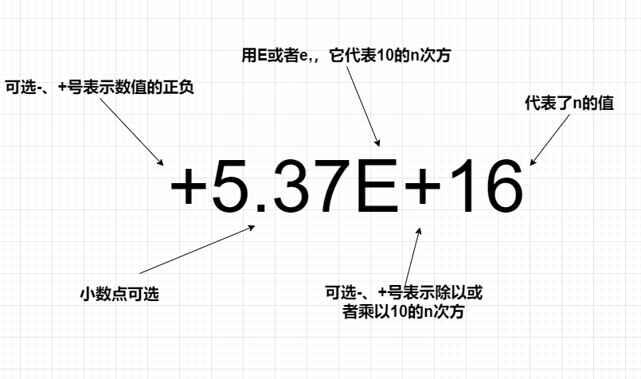

平常都是使用xxx.xxxxx这样的方式，表示值比较小的浮点数可以，但是表示很大或者很小的值就麻烦了，例如0.000000000000000001。这里还有一种E表示法，所以可以用1E-18表示0.000000000000000001。
首先要说明的是，C++中的浮点数是不能仅仅使用==和!=来比较的，因为你以为的3.8可能是3.799999999999这样的数，所以你不知道一个只显示三四位的浮点数后面到底是什么样的，也就是浮点数表达不精确。
所以在比较的时候需要用一个很小的数值来进行比较。当二者之差小于这个很小的数时，就认为二者是相等的了，而不能直接用==或!=比较。这个很小的数，称为精度(误差范围)。一般的精度取1e-10 ~1e-8 之间。